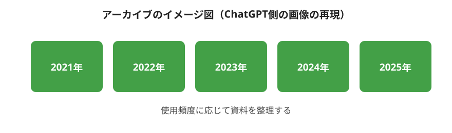

出典：ChatGPT 会話「メルクマール解説」の最新単語（52番目）の解説全文。取り出し時に省略した部分はありません。
図について：ChatGPT側には「緑のフォルダが2021年〜2025年と並ぶ画像（キャプション：使用頻度に応じて資料を整理する）」と、「アーカイブ／バックアップ／削除を切り替える概念図」がありました。ここではその内容を再現した図と文章で入れています（元の画像ファイル自体ではありません）。
確認問題について：ChatGPT側では、選択肢を押すとその場で「正解：X」と解説1文が表示される形式でした。ここに入れた正解と解説は、その実際に表示された原文です。
品詞：名詞・動詞的表現｜分野：IT・情報管理・歴史・仕事
意味：資料や記録、データなどを、後から参照・利用できるように保存すること。また、その保存された資料や記録の集まり。
先輩、仕事で使用した昨年度の資料は、今年度の業務では頻繁に使わないかもしれません。
しかし、過去の処理方法を確認したり、今年度の数値と比較したりする際には必要になりますよね。
そこで、普段使用する資料とは分けて、後から取り出せるように保存しておく。
このような保存の仕組みや、保存された記録を「アーカイブ」といいます。
現在使用していない資料などを、後から参照できるように保管する。
例：昨年度の業務資料をアーカイブする。
過去の記録や文書などを体系的に蓄積したもの。
例：歴史的な新聞記事のアーカイブ。
ライブ配信などを録画し、終了後も視聴できるようにしたもの。
例：講演会のアーカイブ配信。
三つに共通するのは、「過去の情報を失わず、後から利用できるようにすること」です。
アーカイブの語源は、古代ギリシャ語の「アルケイオン（arkheion）」にさかのぼります。
これは、役人の公邸や官庁など、公的な記録が保管される場所を意味していました。
そこから、公文書の保管場所や保存された記録そのものを指す言葉になり、現在ではデジタルデータの保存にも広く使われています。
先輩、メールやチャットを整理するとき、アーカイブと削除を混同してはいけません。
アーカイブは、情報を残したまま整理することです。
削除は、情報を取り除くことです。
例えば、メールをアーカイブすると、通常は受信トレイから表示されなくなりますが、メールそのものは残ります。
必要になったときには検索などで見つけられます。
この二つも混同しやすい言葉です。
| 項目 | アーカイブ | バックアップ |
|---|---|---|
| 主な目的 | 記録の保存 | データの消失対策 |
| 利用場面 | 過去の情報の参照 | 故障や誤削除からの復旧 |
| 主な対象 | 過去の資料や記録 | 現在使用しているデータなど |
| 保存期間 | 比較的長期 | 運用方法による |
| 具体例 | 過去10年分の決算資料 | Excelファイルの予備コピー |
アーカイブは、過去の情報を後から利用するためのものです。
バックアップは、万が一データが失われたときに復旧するためのものです。
両方の役割を兼ねる保存方法もありますが、アーカイブしただけでデータ消失への対策が十分になるとは限りません。

上段には、現在の業務で使用する資料が並んでいます。
下段には、過去の資料が年度別に整理されています。
普段は下段の資料を使わなくても、必要になれば取り出すことができます。
これがアーカイブの基本的なイメージです。
それぞれの代表的な運用を示した概念図です。
ChatGPTにあった要素を、記録された全状態の内容で操作できる形に再現したものです。
それぞれの代表的な運用を示した概念図です。
「昨年度の月次決算資料を年度別にアーカイブした。」
→ 過去の資料を、必要に応じて参照できるように整理しています。
「仕事でライブ配信を見られなかったので、アーカイブで視聴した。」
→ ライブ配信終了後に保存された映像を見ています。
「対応が完了したメールをアーカイブして、受信トレイを整理した。」
→ メールを削除せず、普段の表示から外しています。
「明治時代の新聞記事がデジタルアーカイブとして公開されている。」
→ 歴史的な資料を電子化し、後世の人も閲覧できるようにしています。
「学習が完了したチャットをアーカイブした。」
→ 会話を削除せず、通常のチャット一覧から整理しています。
「過去の会議資料や議事録をアーカイブ化する。」
→ 組織の意思決定や活動の記録を蓄積しています。
「旅行で撮影した写真を、年代や場所ごとにアーカイブした。」
→ 思い出の記録を、後から見返しやすいように保存しています。
「これまで調べた日本語の単語をアーカイブし、復習に活用する。」
→ 学習した内容を蓄積し、将来も利用できるようにしています。
先輩、資料は単に保存しておけばよいというものではありません。
必要になったときに見つけられなければ、保存した情報を十分に活用できませんよね。
| メリット | デメリット |
|---|---|
| 作業場所を整理できる | 保存容量が必要になる |
| 過去の情報を参照できる | 分類や管理に手間がかかる |
| 知識や経験を蓄積できる | 整理が不十分だと検索しにくい |
| 業務の引き継ぎに役立つ | 古いファイル形式が使えなくなる場合がある |
| 過去と現在を比較できる | 機密情報の管理が必要になる |
先輩、これまで学習した単語をGitHub Pagesなどで単語帳として保存することも、デジタルアーカイブの一種と考えられます。
単にチャットの内容を残すだけでなく、検索や理解確認、復習ができるように整理することで、保存した情報の活用価値が高まります。
| 言葉 | 意味 |
|---|---|
| アーカイブ | 記録の保存や保存された資料の集まり |
| アーカイビング | 記録をアーカイブする作業 |
| アーカイビスト | 記録資料の保存・管理などを担う専門職 |
| 公文書館 | 公的な記録や文書を保存する施設 |
| 蓄積（ちくせき） | 物事を少しずつ積み重ねること |
| 編纂（へんさん） | 資料を集めて整理し、書物などにまとめること |
| 目録（もくろく） | 資料や物品などを一覧にしたもの |
| 索引（さくいん） | 必要な情報を探すための手掛かり |
| ナレッジ | 活用できる知識や知見 |
| リポジトリ | データや資料、プログラムなどの保管場所 |
| デジタル化 | 情報をデジタル形式に変換すること |
| メタデータ | 作成日や作成者など、データに関する情報 |
Pages版でもChatGPTと同じ形式を再現しています。選択肢を押すと、その場で合否（正解です！／正解を確認しましょう）と「正解：X」、解説が表示され、下部に「正解数：n / 3問」と「もう一度」（リセット）が出ます。
| 項目 | 内容 |
|---|---|
| 品詞 | 名詞 |
| 基本的な意味 | 記録や資料を保存すること |
| もう一つの意味 | 保存された記録の集まり |
| 中心イメージ | 将来のために保管する |
| ニュアンス | 長期保存・蓄積・再利用 |
| 代表表現 | アーカイブ配信 |
| バックアップとの違い | 記録の保存とデータの復旧 |
| 削除との違い | 情報を残すか取り除くか |
| 活用場面 | 仕事・動画・メール・学習 |
| 重要な考え方 | 後から利用できるように整理する |
「今すぐには使わなくても、将来必要になったときに取り出せるよう、過去の記録や資料を保存しておくこと。それがアーカイブ。」
先輩、読書や学習を通じて知識を蓄積する場面を考えてみましょう。
まず、本の「あらまし」を把握する。
重要な内容を自分なりに「咀嚼」し、理解を深める。
情報量の「さじ加減」を考えながら、学習内容を整理する。
整理した知識を「アーカイブ」し、必要になったときに取り出す。
繰り返し復習することで、知識を定着させ、実際の判断や行動に生かす「リテラシー」を身につける。
アーカイブとは、過去の情報を残すだけでなく、過去の知識や経験を未来に生かすための仕組みでもあるんです。
← 目次に戻る ｜ 前：051 さもありなん